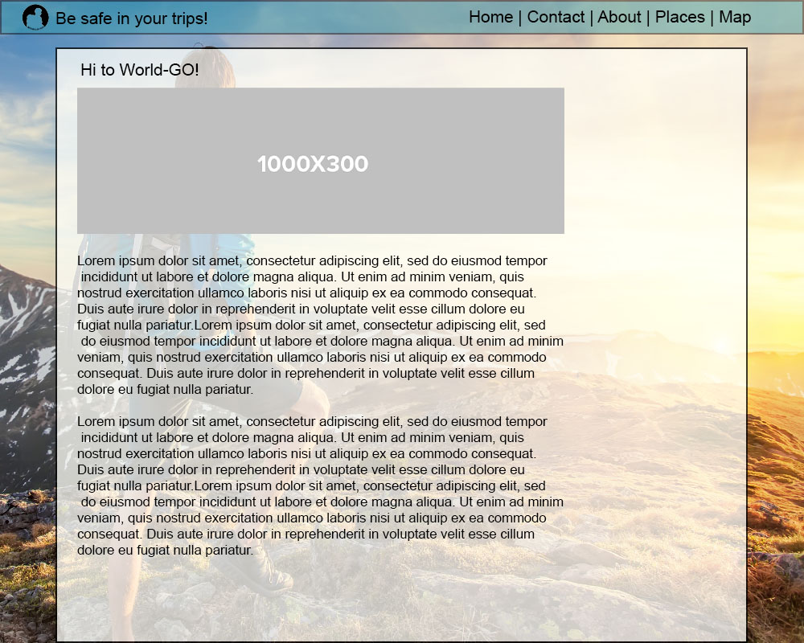
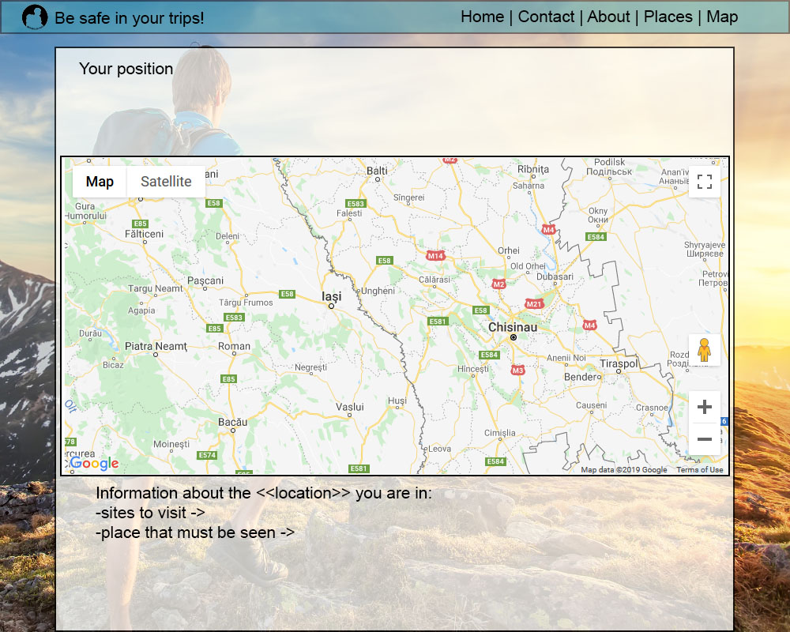
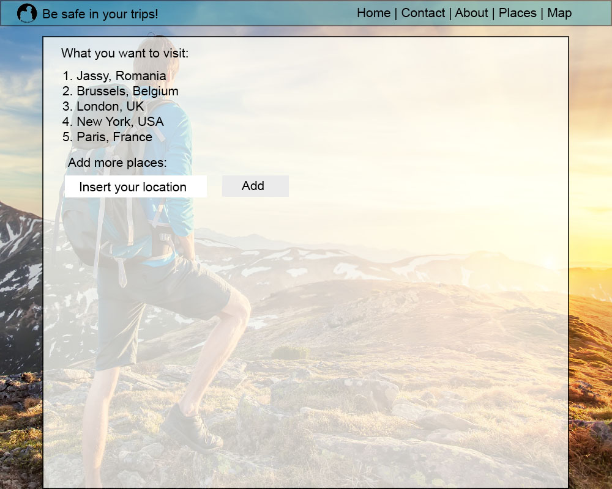

Web Systems Development
Hi, we are Liviu and Alex, and we are trying to do an website that would help the backpackers that would travel around the globe!
This site comes from the needed to document the main website 'World-GO!' that would come to help the backpackers that travel the world. This site will come with solution for the traveler (like hospitals/ hostels/ hotels/ houses/ restaurants and so on) and would have places to 'what to visit' around the location of the traveler.
Also, we hope that our website will help more people, to go visit the Earth, because there are so many beautiful places to visit! But, let's hope that you will find our website interactive, because we put our love and lot of coffee.
The structure of our website will be prety basic. We will have a login/register page that would help the user to have all the information about him on that page.
Also, there will a page dedicat for the map, that would show the sorter route until the next destination of the traveler.
Another thing, will be the 'checklist' that would be found on the 'Places' tab. You can add the places that you want to visit, and your map would update once you put a new location there. Once you visit one location, you can cross that location from places.
The site will be coded in HTML, CSS, JS with a databases in postgreSQL and with a responsive template. The site can be checked HERE
Bellow you can find few images/mockup of our website.
  
We thought about using multiple api's for our application. Bellow you can find the name and the description of this api's.
One of the questions we hear more often from developers and innovators building travel applications is: “okay, once my customers have landed in their destinations, what else can I offer to them?”. I still remember a cool use case that a team suggested in one of the first Hackathons we organized. They wanted to offer a full end-to-end travel experience to their customers based on destination insights, such as the best restaurants or beaches in an area. Unfortunately, back then, we did not offer that type of data as part of our catalog… But that has just changed.
We are excited to introduce a new API to our Self-Service catalog: Points of Interest API. This new API release is a result of our partnership with AVUXI. It provides information about the most popular places at any destination, such as restaurants, monuments, beaches, historical sites, nightlife spots or shopping facilities. The Points of Interest API relies on AVUXI’s GeoPopularity algorithm, which analyses and ranks geolocated data from more than 60 sources, including comments, photos, and reviews from millions of users
We have built two new endpoints following the same design guidelines followed by the rest of the existing APIs from the Self-Service catalog: Points of interest by radius and by square
The first endpoint supports only GET method and returns a list of points of interest for a given location - latitude and longitude - and a radius (1 km by default).
The following sample returns a list of POIs for someone geolocated in Barcelona downtown:
GET https://test.api.amadeus.com/v1/reference-data/locations/pois?latitude=41.397158&longitude=2.160873
In case we want to expand the area of search, we could use the radius parameter. In the following example, we increase the radius up to 3 kilometers:
GET https://test.api.amadeus.com/v1/reference-data/locations/pois?latitude-41.397158&longitude=2.160873&radius=3
GET https://test.api.amadeus.com/v1/reference-data/locations/pois/by-square?north=41.397158&west=2.160873&south=
41.394582&east=2.177181
Response
For both endpoints you can expect the same response format: a list of locations with the following JSON structure:
{
"type": "location",
"subType": "POINT_OF_INTEREST",
"geoCode": {
"latitude": 41.39165,
"longitude": 2.164772
},
"name": "Casa Batlló",
"category": "SIGHTS",
"tags": [
"sightseeing",
"museum",
"sights",
"landmark"
]
}
Sygic Routing API is a cloud-based service that calculates routes from one location to another. Sygic Maps comes with fast and reliable route planning algorithm based on everyday experience of more than 150 million drivers worldwide and with truck routing trusted by more than 750 000 truckers.
Easy to implement API suits all your vehicles and use cases – local delivery zones, emission zones, heavy truck attributes, hazardous material restrictions, and many more but always with focus on road safety. The simplest calculation can be done just by specifying both origin and destination defined by GPS coordinates and including a valid API key. Route calculation can be enhanced by using any of the parameters below:
Routing calculations can be currently done on TomTom, HERE and OSM data. Sygic Routing API uses the same routing algorithm including truck routing as the well known Sygic Professional navigation used by 150 millions drivers worldwide. The only difference is that all computing is done on the cloud which makes the calculation much faster. Routing API will produce the same route as Sygic Professional Navigation app.
The HousingAnywhere API allows you to easily publish your listings on the largest rental accommodation platform globally. The API strongly advances data interoperability between HousingAnywhere and its partners. As property managers you can use the API to connect your inventory to the HousingAnywhere platform, enabling you to reach a far bigger target audience. Bookings take place on the HousingAnywhere platform and the API will ensure that partner systems are updated in real-time whenever one of your properties gets booked on the HousingAnywhere platform.
The HousingAnywhere API offers a range of possibilities. The API supplies a managed solution for storing and accessing property data such as media and listing details on HousingAnywhere.
Connected property managers can store and access information regarding the pricing and availability of all their rental units. This information is updated based on a predetermined frequency as updates are pulled by the HA platform.
Webhooks enable two-way integrations to ensure that information is kept synchronized between HousingAnywhere and systems that are already being used by property managers. By using these webhooks, bookings and cancellations can automatically be confirmed as they happen, and availability calendars are updated on the fly.